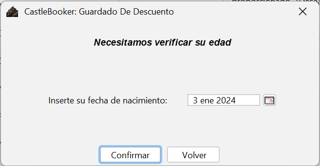

El precio de la habitación no varia segun el numero de personas que la ocupa
La pantalla a completar es la siguiente:

La aplicación automáticamente actualizará los precios y los mostrará al final de esta
El proceso de reserva consta de tres pasos, el primero es la seleccion de fechas, en el segundo se piden los datos personales y por último es la confirmación de la reserva
La aplicación limita el numero de habitaciones a 20 y el numero de personas a 40, solo se permite que una habitación sea ocupada
por una o dos personas, los días también están limitados, siendo el límite un mes completo
El precio de la habitación no varia segun el numero de personas que la ocupa
La pantalla a completar es la siguiente:
La aplicación automáticamente actualizará los precios y los mostrará al final de esta
Cuando se confirme la fecha, se procederá a pedir los datos personales, si el sistema conoce tu Dni, ya bien porque acabas de ganar un descuento o de consultar si lo posee,
no tendras que proporcionarlo, solo se te pedira tu nombre y tu correo, también exite la posibilidad de añadir comentarios(este campo no es obligatorio)
La pantalla a completar será la siguiente:
Nota:Si en alguna de las dos ventanas anteriores aparece un error, se indicará el campos causante de este
Este ultimo paso mostrará un resumen de la reserva, si estas confome a los datos, se procederá a guardar dicha reserva,
a demas, si posees un descuento el sistema te mostrará en la parte derecha un texto preguntando si se desea utilizarlo, y se podrá apreciar en la parte
inferior el precio con descuento
Para finalizar si no has introducido tu fecha de nacimiento durante el uso actual de la aplicación, se te pedirá que la proporciones,
necesitamos esta información para comprobar que eres mayor de edad.
Para ello se abrirá la siguiente ventana:

Tras todos esto pasos, se te mostr un mensaje confirmando la reserva